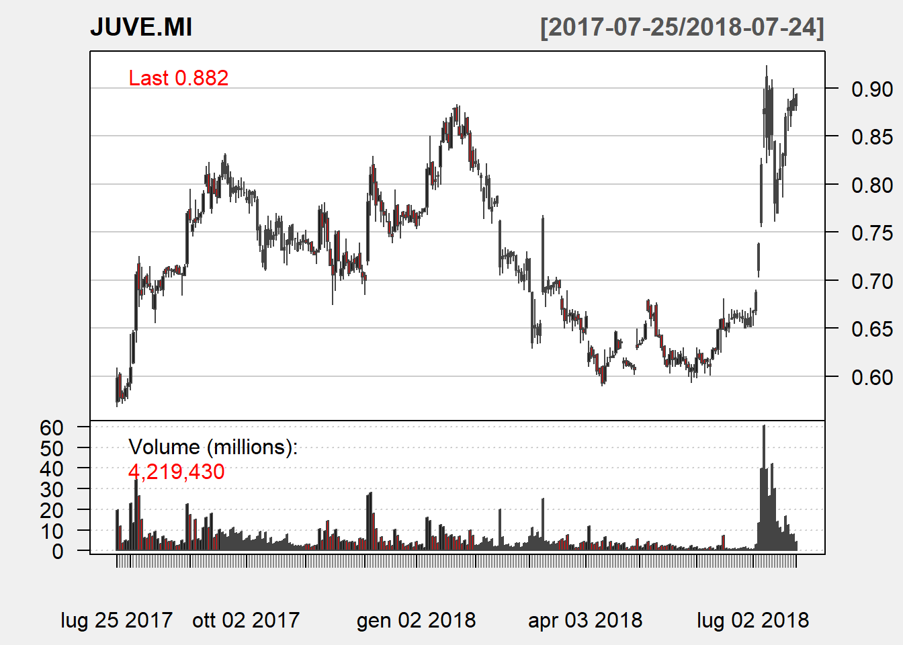

NOTE: The information in this post is of a general nature containing information and opinions from the author’s perspective. None of the content of this post should be considered financial advice. Furthermore, any code written here is provided without any form of guarantee. Individuals who choose to use it do so at their own risk.
Importing the data following the example showed in: An Introduction to Stock Market Data Analysis with R
if (!require("quantmod")) {
install.packages("quantmod")
library(quantmod)
}## Loading required package: quantmod## Warning: package 'quantmod' was built under R version 3.5.1## Loading required package: xts## Warning: package 'xts' was built under R version 3.5.1## Loading required package: zoo##
## Attaching package: 'zoo'## The following objects are masked from 'package:base':
##
## as.Date, as.Date.numeric## Loading required package: TTR## Version 0.4-0 included new data defaults. See ?getSymbols.# set dates
start <- Sys.Date() - 365
end <- Sys.Date()
getSymbols("JUVE.MI", src = "yahoo", from = start, to = end)## 'getSymbols' currently uses auto.assign=TRUE by default, but will
## use auto.assign=FALSE in 0.5-0. You will still be able to use
## 'loadSymbols' to automatically load data. getOption("getSymbols.env")
## and getOption("getSymbols.auto.assign") will still be checked for
## alternate defaults.
##
## This message is shown once per session and may be disabled by setting
## options("getSymbols.warning4.0"=FALSE). See ?getSymbols for details.##
## WARNING: There have been significant changes to Yahoo Finance data.
## Please see the Warning section of '?getSymbols.yahoo' for details.
##
## This message is shown once per session and may be disabled by setting
## options("getSymbols.yahoo.warning"=FALSE).## Warning: JUVE.MI contains missing values. Some functions will not work if
## objects contain missing values in the middle of the series. Consider using
## na.omit(), na.approx(), na.fill(), etc to remove or replace them.## [1] "JUVE.MI"class(JUVE.MI)## [1] "xts" "zoo"head(JUVE.MI)## JUVE.MI.Open JUVE.MI.High JUVE.MI.Low JUVE.MI.Close
## 2017-07-25 0.5730 0.6090 0.5680 0.5985
## 2017-07-26 0.6020 0.6040 0.5740 0.5770
## 2017-07-27 0.5820 0.5850 0.5715 0.5765
## 2017-07-28 0.5790 0.5900 0.5745 0.5870
## 2017-07-31 0.5895 0.5975 0.5765 0.5925
## 2017-08-01 0.5930 0.6440 0.5860 0.6085
## JUVE.MI.Volume JUVE.MI.Adjusted
## 2017-07-25 19444884 0.5985
## 2017-07-26 11820555 0.5770
## 2017-07-27 3529920 0.5765
## 2017-07-28 4937531 0.5870
## 2017-07-31 4502461 0.5925
## 2017-08-01 22953159 0.6085candleChart(JUVE.MI, up.col = "black", dn.col = "red", theme = "white")
save(JUVE.MI,file="juve.Rdat")